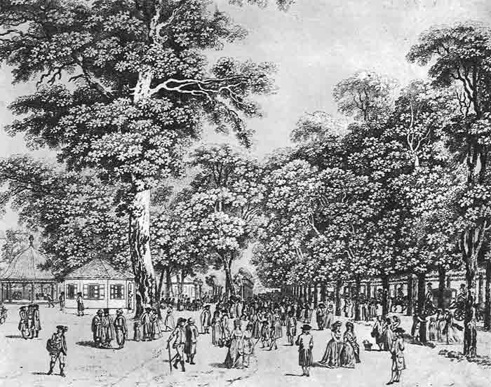

Seit 1560 im Prater
„Jedermann offen und frey“
Jagdhaus der Habsburger, Schauplatz des Wiener Kongresses, Bühne des Fiakersports, im Krieg zerstört, 1949 der Öffentlichkeit zurückgegeben: die Geschichte eines Wiener Wahrzeichens – und seiner Küche.
Das Haus
Ein Gebäude von hochinteressanter Anatomie
Bei aller Schlichtheit der oktogonalen Form und der ungeteilten Räume ist das Lusthaus ein Gebäude von unterschiedlichem Charakter seiner Teile. Besonders deutlich wird das im Turmstüberl, auch Laterne genannt: jenem kleinen, rundum verglasten Pavillon am Dach, von dem aus man über die Wipfel der Praterbäume blickt. Von dort wird klar, dass hier beim Lusthaus das wahre Zentrum des Praters liegt, zu dem ein Stern von Alleen führt – ein Lustgewinn durch Aussicht.
Einst ein Kanonenschuss ins Weite, ehemals grün, dann ein gelber Fleck, bisweilen Jagdhütte, dann Treff der Noblesse, ein Barock-Pavillon, beschrieben von Heimito von Doderer, karikiert von Adalbert Stifter, frequentiert von Arthur Schnitzler und Felix Salten: das Lusthaus ist ein beliebtes Café-Restaurant geworden und bis heute geblieben.

Zeitleiste
Von der Jagd zur Gastfreundschaft
Alle Angaben nach Erich Zinsler, „Das Lusthaus im Wiener Prater. Zur Geschichte eines fast vergessenen Wiener Wahrzeichens“, Wiener Geschichtsblätter, Beiheft 4, Wien 2000.
-
1560
Kaiser Maximilian II. vereinigt den Lehensbesitz einiger Klöster und Gemeinden im Gebiet des heutigen Praters zu einem geschlossenen kaiserlichen Jagdgebiet. Es entsteht das „Grüne Lusthaus“, ein Jagdhaus.
-
1766
Kaiser Josef II. macht den bis dahin Hof und Adel vorbehaltenen Prater öffentlich zugänglich.
-
1781–1783
Das Lusthaus wird im Auftrag Josefs II. von Isidore Canevale neu erbaut. Seither ist es wiederholt Schauplatz großer Festlichkeiten.
-
18. Oktober 1814
Zum ersten Jahrestag der Völkerschlacht bei Leipzig wird anlässlich des Wiener Kongresses ein opulentes Armeefest im Prater veranstaltet: 18.000 Mann Fußvolk und Reiter werden verköstigt. Im ersten Stock des Lusthauses speisen die kaiserliche Familie, die hohen Souveräne – darunter Zar Alexander von Russland sowie die Könige von Dänemark, Preußen, Bayern und Württemberg –, die Kron- und Erbprinzen sowie Feldmarschall und Kriegsminister Fürst Schwarzenberg. An der Tafel des Erzherzogs Carl im Erdgeschoss feiern Erzherzöge, Prinzen und weitere Würdenträger.
-
Ära Franz Joseph I.
Die Freudenau ist Zentrum des Pferdesports; gesellschaftliche Höhepunkte sind Derby und Blumenkorso. Das Lusthaus ist Treffpunkt und Bühne des eleganten Wien und wird vom Kaiser gerne besucht. Der Fiaker Haas legt die Strecke vom Praterstern zum Lusthaus und zurück in der Rekordzeit von 19 Minuten zurück.
-
1903
In der Hauptallee findet bereits ein Automobilrennen statt.
-
1914–1918
Der Erste Weltkrieg bringt Betriebseinschränkungen und militärische Einquartierungen: Im Lusthaus befindet sich die Brückenwache, die die Donaubrücke vor Sabotage schützt.
-
Zwischenkriegszeit
Küche und Nebenräume werden zugebaut, das Gästepublikum ändert sich. Es gibt Barbetrieb mit Tanz und Musik. In der Freudenau entsteht der Poloplatz – heute Golfplatz. 1924 wird die Wallfahrtskirche Maria Grün errichtet, heute beliebte Trauungskirche mit anschließendem Hochzeitsfest im benachbarten Lusthaus.
-
17. März 1944
Der erste Luftangriff trifft den Prater.
-
15. Februar 1945
Eine Fliegerbombe trifft den rückwärtigen Teil des Lusthauses und bringt Zubau und Stiegenaufgang zum Einsturz. In den folgenden Kämpfen werden Holzschindeldach mit verglaster Laterne zerstört, Pfeiler und Balkone stürzen ein, das Innere wird verwüstet.
-
1948
Der Wiederaufbau beginnt – nach Gestaltungsvorschlägen von Prof. Dr. Michel Engelhart und unter Aufsicht des Bundesdenkmalamtes.
-
28. Oktober 1949
Stadtrat Richard Nathschläger übergibt das traditionsreiche Haus mit einem Festakt der Öffentlichkeit. Der Prater verändert sich beständig – das Lusthaus steht gemäß dem Wunsch Kaiser Josephs nach wie vor „jedermann offen und frey“.

Umgebung
Der gelbe poetische Fleck im Prater
Eine grellbunte Melange aus Auwald und Reitbahn, aus Messegelände und Hafenzufahrt, aus Hundedressuranstalten und Hochzeitskapelle, aus Badeanstalt und Gasthausgarten, Autodrom, Schaubuden, Sportstadion, Golf-, Bowling- und Tennisplätzen, aus Eichenwald, Kastanienalleen und ausgedehnten Wiesen.
Das Riesenareal mit dem „Dritten Mann“, mit dem Hutschenschleuderer „Liliom“, dem „Leutnant Gustl“ zu durchstreifen, ist ein Abenteuer, das sich allemal lohnt: Literaturgeschichte, die sich zur Sozialgeschichte weitet. Im Lusthaus Stammgast, beschreibt Adalbert Stifter einem Fragenden den Prater: „Ist es ein Park? Nein! Ist es eine Wiese? Nein! Ist es ein Garten? Nein! Ein Wald? Nein! Eine Lustanstalt? Nein! – Was denn? Alles dies zusammengenommen!“
Die Hauptallee läuft zwischen ihren Kastanienbäumen pfeilgerade vom Praterstern bis zum Lusthaus. Vereinzelt begegnet man Reitern, Radfahrern und Läufern; vorbei geht es an Jesuitenwiese und Heustadlwasser, wo der Bootsverleih an sommerlichen Wochenenden in Betrieb geht.
Der Praterkellner
Mit dem Kennerblick des großen Routiniers
„Praterkellner. Das ist eben eine besondere Gattung. Sie sind urwüchsig, ungeschliffen, naiv. Vollkommene Naturkinder … Erst in späten Jahren, wenn sie behäbig, ruhig und Zahlkellner geworden sind, nehmen sie sanftere Manieren an. Dann haben sie den etwas stumpfen Kennerblick großer Routiniers, den Blick und die Miene von Männern, die nun auch das menschliche Wesen gründlich erforscht zu haben glauben.“
Wir empfehlen die Lektüre von Dietmar Grieser, „Gustl, Liliom und der dritte Mann. Ein literarischer Praterspaziergang“, die uns als Quelle diente.
Neu: Galerie
Bilder aus Haus und Prater
Klicken Sie ein Bild an, um es groß zu sehen.
Auszeichnungen
Anerkennung von außen
- 81,00 Punkte im Falstaff Restaurant- und Gasthausguide 2024
- Restaurant Guru Auszeichnung laut Gästebewertungen
- 4,3 von 5 bei 1.268 Google-Bewertungen
- Maria Grün Trauungskirche in Gehweite – Hochzeitsfest im Lusthaus